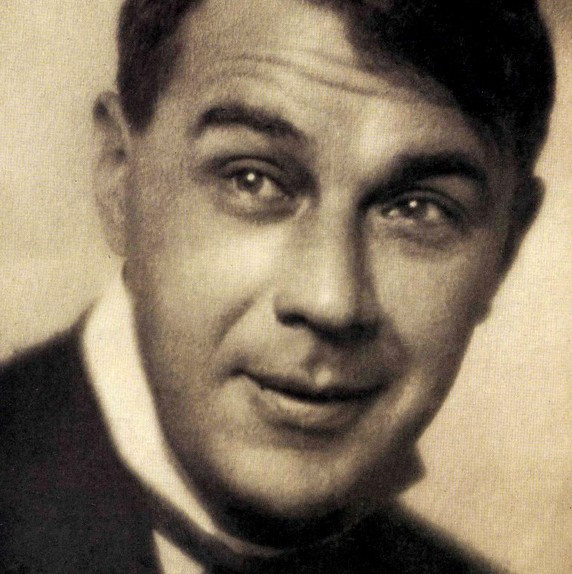

Kosztolányi Dezső
Kosztolányi Dezső az Osztrák-Magyar monarchia területén, Szabadkán született. Édesapja Kosztolányi Árpád fizika és kémia professzor, valamint iskolaigazgató volt. Édesanyja a francia származású Brenner Eulalia.
Kosztolányi Dezső a középiskolai tanulmányait Szabadkán kezdte meg, de tanárával való konfliktusa miatt kiutasították innen. Szegeden, magántanulóként érettségizett.
1903-ban Budapestre költözött és ekkor kezdte meg tanulmányait a budapesti egyetem bölcsészkarán, magyar-német szakon. Itt találkozott Babits Mihály és Juhász Gyula költőkkel, és életre szóló barátságot kötött Karinthy Frigyessel is. Egy kis ideig a bécsi egyetemre is járt, de nem fejezte be, hazaköltözött és újságírónak állt, mely szakmát élete végéig gyakorolta.
1908-ban átvette a költő Ady Endre helyét, aki Párizsba utazott tudósítani egy budapesti lapnak. 1910-ben jelent meg első verseskötete a Szegény kisgyermek panaszai címmel, mely országos sikert aratott, és mellyel egy termékeny időszak kezdődött el Kosztolányi Dezső életében. Szinte minden évben kiadott egy könyvet.
1913-ban vette feleségül Harmos Ilona színésznőt, aki Görög Ilona néven jelentette meg novelláit. 1915-ben született meg fiúk, Kosztolányi Ádám. 1936-ban, szájrákban halt meg.
Néhány művei
- Boszorkányos esték (novella kötet)
- Négy fal között (verseskötet)
- Édes Anna (regény)
- Esti Kornél (regény)
- Néro a véres költő (regény)
- Pacsirta (regény)
- Aranysárkány (regény)
Életrajza
| Született | 1885. Március 29. |
|---|---|
| Meghalt | 1936. November 3. (rákban) |
| Foglalkozásai | költő, irodalomkritikus, fordító, újságíró, esszéíró, író, szabadkőműves |
| Apja | Kosztolányi Árpád |
| Anyja | Brenner Eulalia |
| Házastársa | Kosztolányi Dezsőné |